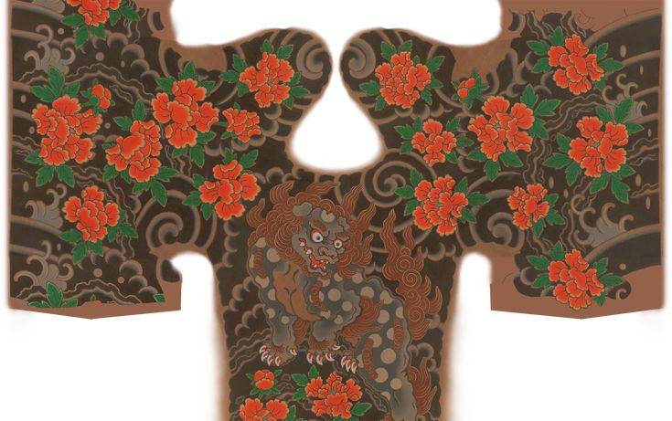
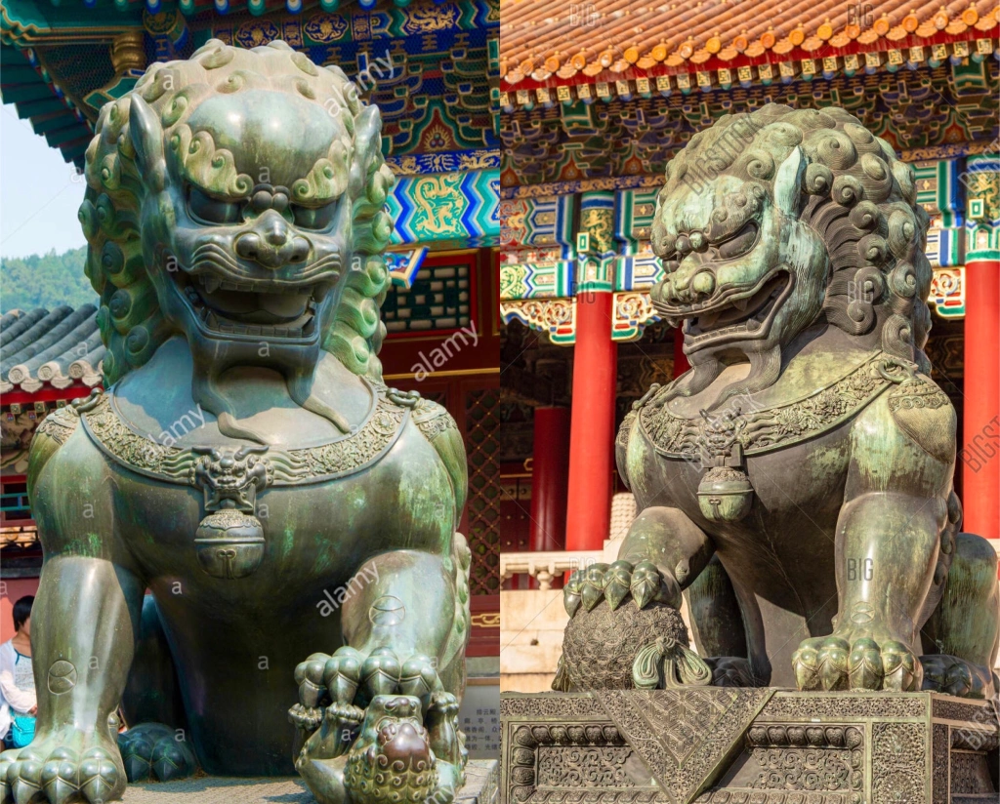
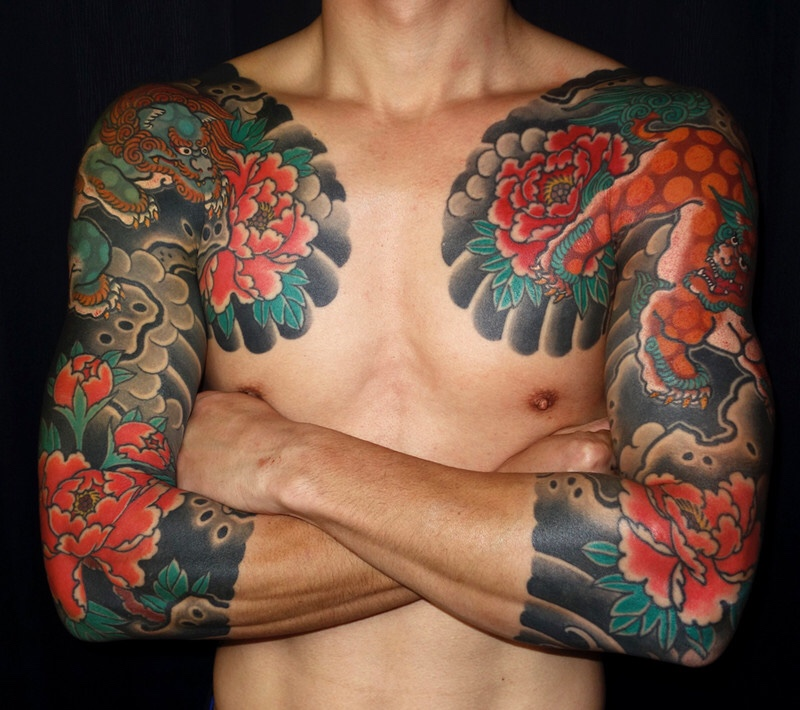
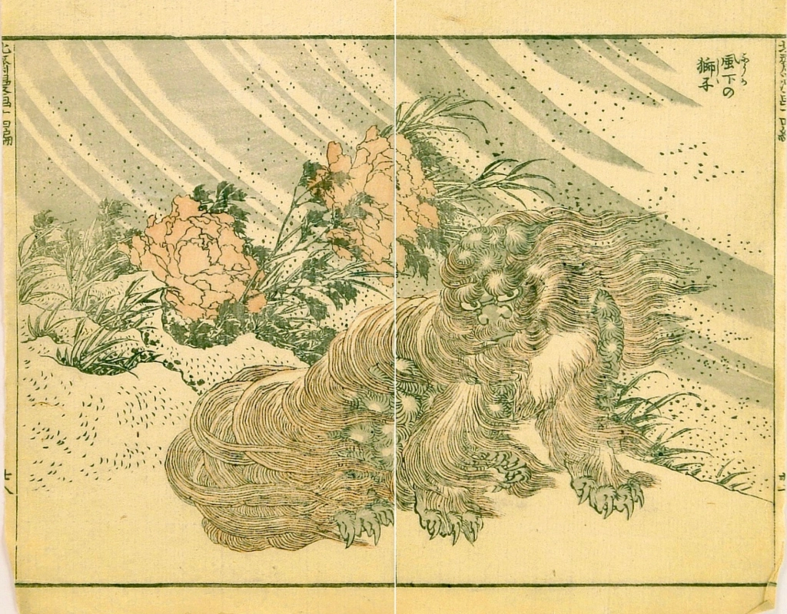
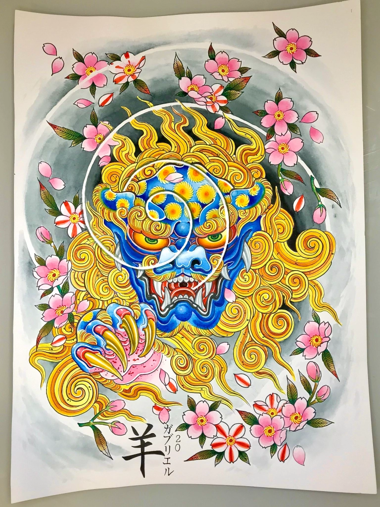

Shishi 獅子, Foo Dog

Desde muito tempo e em diversas culturas o Leão é um animal venerado devido ao seu domínio sob a cadeia alimentar, o mais temido entre os animais, sua presença resplandece por onde quer que passe. Nao preciso dizer muito, todos sabemos que ele é o rei.
Tal animal de presença inconfundível logo passou a ter muitos admiradores que contavam historias sobre essa besta feroz que dominava grandes áreas com uma força descomunal.
Antigamente as informações eram transmitidas através da fala, historias, contos e lendas, etc.. E isso fazia com que a historia mudasse pouco a pouco, conforme se espalhava pelo mundo.
Os budistas indianos se impressionaram com as historias sobre tal animal e rapidamente o associaram ao sagrado, a uma criatura divina criada para dominar e proteger. Não demorou muito e a figura do Leão começou a ser representada ao lado de Buda, ou mesmo com ele montando o Leão.
O Leão passa a ser adorado e os artistas começam a produzir pinturas, esculturas, estatuetas e utensílios com a sua temática. É muito provável que algumas dessas peças tenham chego até à China por meio da Rota da Seda.
.webp)
Mas como dito anteriormente, as historias sobre o animal já tinham percorrido um longo caminho e chegado até a China então eles já tinham desenvolvido um imaginário a respeito do leão. Os ideais Budistas se fundiram aos ideias imperialistas chineses, assim foi introduzida a adoração ao Leão no país e o batizaram com o nome Karajishi, onde kara=china e shishi=Leão (o ”shi” se torna ”ji”) Leão chinês.
Além de karajishi a criatura também é conhecida pelos nomes Shishi (leão em chines), Foo Lion, Foo Dog e Lion Dog.
Caracteristicas do Karajishi
Por se tratar de uma criatura designada para proteger Buda, foi considerado a entidade perfeita para ser posta como guardião dos templos, santuários e instalações imperiais.
Dois karajishis são posicionados lado a lado na entrada de templos ou à frente de portais. Seus corpos arredondados representam o universo, eles estão em guarda sob uma base de pedra quadrada que representa o planeta terra que antigamente era visto dessa forma.

Karajishi’s na cidade proibida da China.
Observando-os de frente, a direita temos o macho apoiando sua pata sob a Tama, pérola sagrada Budista, símbolo da sabedoria budista que leva luz as trevas e contém o poder de conceder desejos. E a esquerda temos a fêmea com sua pata sob um filhote, protegendo-o, representando as várias gerações que estão por vir, garantindo assim que o ciclo da vida permaneça em constante renovação.
O macho mantém sua boca aberta enquanto a fêmea mantém fechada, essa dinâmica tem a ver com os sons Ah (boca aberta) e Un (boca fechada). “Ah” é o primeiro som do alfabeto japonês e “N” (pronunciado “Un”) é o último. Esses sons simbolizam o início e o fim, nascimento e morte, alpha e omega e todas as relações cósmicas de existência.
Na tatuagem é mais comum vermos as bocas abertas e fechadas do que a Tama e o filhote, é normal alguns detalhes serem omitidos pensando em uma apuração estética mais dinâmica. Também é importante frisar que na tatuagem japonesa Irezumi, costuma-se desenhar a criatura com referência nas pinturas ukiyo-e e desenhos de mestres ao invés das estátuas. Ainda no Irezumi, vemos que quase sempre o karajishi está acompanhada de Peônias (Botan) como Keshoubori, essa combinação se tornou uma “regra” na tatuagem devido a uma lenda chinesa.


Kosei Shishido e sua Irezumi Karajishi do jogo Like a Dragon Gaiden
Lenda do Karajishi Botan
Por mais que o karajishi pareça invencível, existe uma coisa que ele tem medo, um certo tipo de inseto parasita, essa espécie de “carrapato” vive dentro de seus pelos. Eles se multiplicam e acabam parando debaixo da pele dos leões, lá pouco a pouco vão devorando sua carne até que ele fique completamente debilitado e morra.
A única coisa repele esses insetos são gotas de umidade que caem de Flores de Peônia durante a noite. Os karajishi astutos sabem disso, então dormem debaixo das peônias todas as noites, é o lugar mais seguro para eles, onde encontram paz e podem descansar tranquilamente.

Katsushika Hokusai Manga Vol. 14 – Shishi ao vento
Mas não significa que devemos desconfiar de tudo e todos, apenas que precisamos estar sempre atentos aos nossos arredores, as pessoas que nos cercam e principalmente com aquilo que cultivamos dentro de nós, e também precisamos ter a humildade para reconhecer que não podemos fazer tudo sozinhos e precisamos de uma peônia ao nosso lado. O rei é rei pois sabe buscar ajuda para lidar com suas fraquezas.
E você? O que, ou quem é sua peônia?

.png)